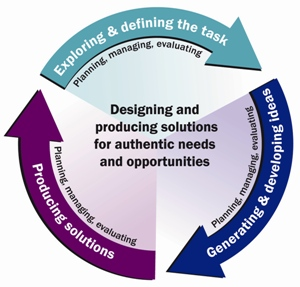

The design process
Nothing in society is made "just because", everything is made with a purpose, aim or user in mind. The technology process is the process we use to produce a solution that meet the needs of a defined user in society.

Exploring and defining the task involves the activities students undertake to identify and explore a need or opportunity, taking into consideration the user, the client, the available resources and social, ethical and environmental issues. Students establish the criteria for a successful design solution, set milestones and define the constraints for the project in a statement or brief.
Generating and developing ideas involves students exploring options, considering existing solutions, generating alternatives, representing and refining those ideas and deciding upon options. Students identify, explore and select resources such as techniques, materials and equipment that will best achieve the solution, taking into account short-term and long-term impacts of their decisions and actions.
Producing solutions involves students finalising design decisions; completing final design representations such as production drawings or storyboards; sequencing the step-by-step actions for production; managing safety risks; practicing and refining techniques; and completing the production of the solution. Students reflect on the success of the solution, the process and the learning.
Planning, managing and evaluating is an essential component of each of the above phases. Management decisions made by students involve planning and reviewing milestones and implementing and monitoring time, actions and financial plans. Ongoing evaluation, related to the criteria of success, informs the students’ decision making at each phase and the evaluation at the conclusion of the project involves reflection and learning about the process used and the success of the solution.
Read more here
Download the design process template here